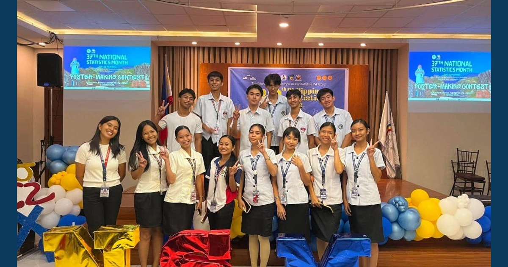

MCNP–ISAP Advances Statistical Literacy through Month-Long 37th Statistics Month Celebration

MCNP and ISAP engaged all 17 academic departments in webinars, quiz bees, poster competitions, and infographic data interpretation for the 37th National Statistics Month.
Read full article